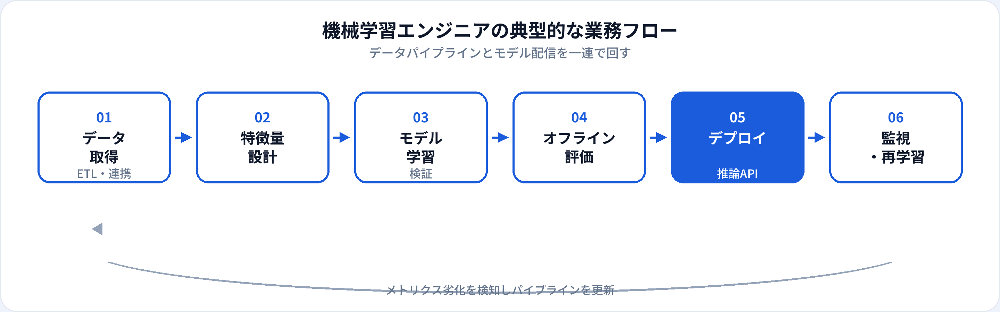

機械学習エンジニア（ML Engineer）は、データから学習可能な特徴量を作り、モデルを訓練・評価し、推論サービスとして届けるエンジニア職です。AIエンジニアと肩書きが重なることもありますが、実務では「パイプライン」「再現性」「オフライン評価」へのこだわりが強いポジションとして理解されることが多いです。本記事では、年収、スキル、関連職種との違いを2026年6月時点の市場感覚で整理します。
資格・学習との関係
機械学習エンジニアに必要なのは、ライブラリの使い方だけでなく、教師あり学習・汎化・過学習などの概念理解です。G検定では機械学習がAI実現の代表的アプローチであることや、ディープラーニングとの包含関係が問われます。実装面接では「なぜその評価指標か」を説明できるかが見られます。
よくある誤解は、「機械学習エンジニア＝Kaggleで上位に入れば十分」という考え方です。コンペは学習に有効ですが、採用では再現可能なパイプライン設計・本番運用・チーム開発の経験も重視されます。
機械学習エンジニアとは
機械学習エンジニアは、Machine Learning Engineer（ML Engineer）として、データパイプライン上でモデルを学習させ、品質を検証し、推論環境へ載せるエンジニアです。研究開発部門のプロトタイプを、運用可能なソフトウェアに落とし込む橋渡し役になることもあります。
データエンジニアが整備したデータ基盤の上で動くことが多く、特徴量ストアやバッチ学習ジョブ、オンライン推論APIなど、ML特有のインフラに触れる機会があります。生成AI領域では、従来の教師あり学習に加え、ファインチューニングやRAG評価を担当するチームも増えています。
仕事内容
組織によって分担は異なりますが、機械学習エンジニアに期待されやすい業務は次のとおりです。

データ連携・前処理
倉庫やストリームから学習データを取得。欠損・外れ値・リーク（情報漏洩）への対処。
特徴量設計
カテゴリエンコーディング、集計特徴、時系列ラグなど。ドメイン知識とセットで設計する。
モデル学習・チューニング
アルゴリズム選定、ハイパーパラメータ探索、学習の再現性確保（シード・環境固定）。
オフライン評価
ホールドアウト・交差検証・時系列分割。ビジネス指標との対応づけも重要。
デプロイ・推論
バッチ推論、リアルタイムAPI、エッジ推論。レイテンシとスループットを設計する。
モニタリング・再学習
予測分布のドリフト検知、性能劣化時の再学習パイプライン起動。
必要スキル
| 領域 | 具体例 | 重要度の目安 |
|---|---|---|
| Python / SQL | pandas、scikit-learn、PyTorch、BigQuery/SQL | 必須 |
| 機械学習の理論 | バイアス・分散、正則化、評価指標、クラス不均衡 | 必須 |
| MLOps | MLflow、Kubeflow、CI/CD、モデルレジストリ | 中級以上で重視 |
| クラウド | SageMaker、Vertex AI、Azure ML など | 求人により必須級 |
| ソフトウェア工学 | Git、テスト、コードレビュー、設計ドキュメント | 実務で差がつく |
年収相場
当サイトの職種マスタでは、機械学習エンジニアの年収目安を550万〜1,300万円としています（2026年6月時点の一般的な相場感）。AIエンジニアと同水準〜やや上振れする求人もあり、MLOpsや大規模トラフィックの推論設計ができると上限が上がりやすいです。
| 区分 | 年収の目安（日本・一般論） | 補足 |
|---|---|---|
| ジュニア | 550万〜750万円前後 | 既存パイプラインの改善・実験補助から入る |
| ミドル | 750万〜1,050万円前後 | 学習〜デプロイまで一人称で担当 |
| シニア | 1,050万〜1,300万円以上 | アーキテクチャ設計・チームリード |
キャリアパス
-
MLスペシャリスト
推薦・検索・異常検知など特定ドメインの技術深化。
-
MLOps / プラットフォームエンジニア
学習・推論基盤の共通化。SREに近いスキルセットへ。
-
データサイエンティスト寄り
分析・因果推論・実験設計の比重を上げるキャリアチェンジ。
-
テックリード・マネジメント
複数モデル・複数チームの技術方針を統括。
関連職種との違い
| 職種 | 主な焦点 | 機械学習エンジニアとの違い |
|---|---|---|
| AIエンジニア | AI機能の実装全般 | 肩書きが重なることが多い。MLエンジニアは学習パイプライン寄りのJDが多い。 |
| データサイエンティスト | 分析・仮説検証 | 統計的な問い立て・可視化の比重が高い。実装はMLエンジニアと分担も。 |
| データエンジニア | データ基盤・ETL | パイプライン構築が中心。モデル学習はMLエンジニアが担当することが多い。 |
| MLOpsエンジニア | 配信・監視基盤 | モデル開発より運用自動化・信頼性が中心。 |
未経験からの道のり
-
PythonとSQLの基礎（1〜2か月）
データ操作ができる状態に。G検定レベルの用語も並行して整理。
-
scikit-learnで end-to-end（2〜3か月）
前処理・学習・評価を一つのノートブックではなく、スクリプト化する。
-
再現可能なプロジェクト（1〜2か月）
requirements.txt、README、固定シードで学習結果を再現できる形にする。
-
デプロイ体験（任意）
FastAPI + Docker、またはクラウドのマネージド推論でAPI公開。
メリット・デメリット
| メリット | デメリット |
|---|---|
| データドリブンな意思決定を技術で支えられる | データ品質問題に多くの時間を取られる |
| AIエンジニアと同様に市場需要が高い | 評価指標とビジネスKPIのズレに悩みやすい |
| Kaggle・OSSで実績を可視化しやすい | 本番運用まで含めると学習範囲が広い |
| MLOpsへ発展するキャリアパスが明確 | 研究職ほど論文成果は求められない反面、実装速度が問われる |
よくある質問
機械学習エンジニアとAIエンジニアの違いは？
呼び方は企業によって混同されますが、機械学習エンジニアは特徴量設計・学習パイプライン・オフライン評価・デプロイまでのML実装に比重が置かれることが多いです。詳しくはAIエンジニアの解説も参照してください。
機械学習エンジニアに必要なプログラミング言語は？
日本の求人ではPythonが最も多く、NumPy・pandas・scikit-learn・PyTorchなどのライブラリ利用が前提となることがほとんどです。SQLでデータを引く機会も多いです。
機械学習エンジニアの年収相場は？
経験・企業規模により幅がありますが、おおむね550万〜1,300万円前後が目安となることが多いです（2026年6月時点の一般的な相場感）。
データサイエンティストから機械学習エンジニアに移れますか？
可能です。分析・仮説検証の経験を活かしつつ、再現可能な学習コード・パイプライン・デプロイのスキルを足すのが典型的な移行パターンです。
大学院は必要ですか？
必須ではありません。修士・博士は研究開発ポジションで有利になることはありますが、多くのWebサービス系企業では実装ポートフォリオと業務経験が重視されます。進学の判断は大学院（AI・ML）に進むべき？も参照してください。